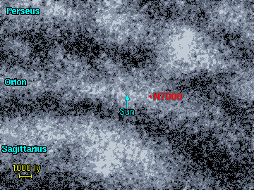

إن سديم البجعة و سديم أمريكا الشمالية يشكلان مع بعضهما سديما واحدا و لكن يفصل بينهما طبقات من الغبار الكوني، و يقع سديم أمريكا الشمالية إلى اليسار و يبدو ظاهريا شديد الشبه بالحدود الرئيسية للقارة الأمريكية . المنطقة التي تقع إلى اليمين تمثل سديم البجعة.
تم ذكر أربعة من المناطق السديمية هنا في مصنفي NGC/IC. يعتبر سديم أمريكا الشمالية (NGC 7000) الجزء الألمع. و الأجزاء الثلاثة المتبقية و هي (IC 5067/68/70) هي أجزاء أكثر خفوتا و تتبع لسديم البجعة.
1 2 3 4 5 6 7 8
Catalogue Equatorial Galactic Size Type Distance Size Other Names
Number Coordinates Coordinates (arcmins) (ly) (ly)
RA (2000) Dec l° b°
-----------------------------------------------------------------------------------------
IC 5067 20 50.8 +44 21 84.6 +0.1 25' E 1900 15 Pelican nebula
IC 5068 20 50.8 +42 31 83.2 -1.1 40' E 1900 20 Pelican nebula
IC 5070 20 50.8 +44 11 84.5 0.0 60' E 1900 35 Pelican nebula
NGC 7000 20 58.8 +44 31 85.6 -0.9 120' E 1900 65 North America nebula
|
------------------------------------------------------------------------------------------ العمود 1: إسم السديم النظامي في المصنف. العمود 2: إحداثيات المطلع المستقيم و الميل - حولية فلكية للعام 2000. العمود 3: إحداثيات الطول (l) و العرض (b) المجريين. العمود 4: الحجم الزاوي للسديم بالدقيقة القوسية. العمود 5: نوع السديم E = إصداري, R = إنعكاسي. العمود 6: المسافة التقريبية إلى السديم مقدرة بالسنين الضوئية. العمود 7: الحجم التقريبي للسديم مقدرا بالسنة الضوئية. العمود 8: الاسم البديل للسديم. |
لا وجود لعناقيد نجمية ذات ارتباط واضح و حتمي بهذه السدم، و ربما يكون العنقود النجمي NGC 6996 ليس بعنقود حقيقي فهو مؤلف من نجوم متفرقة لا تقع على مسافة واحدة. و قد تم ذكرها هنا لأن العديد من المراجع تخطأ في التمييز بينها و بين NGC 6997. إن NGC 6997 هو بلا شك عنقود نجمي، , و لكنه أكثر قدما و من المحتمل أنه لم ينشأ داخل السديم. ربما يكون Collinder 428 عنقود يقع في الخلفية.
1 2 3 4 5 6 7
Catalogue Equatorial Galactic Size Distance Age Other Names
Name Coordinates Coordinates (arcmins) (ly) (million
RA (2000) Dec l° b° years)
----------------------------------------------------------------------------------
NGC 6996 20 56.5 +45 28 86.1 +0.1 8' ? ?
NGC 6997 20 56.7 +44 38 85.5 -0.5 8' 2000 100
Collinder 428 21 03.3 +44 35 86.2 -1.4 10' 1550 ?
|
العمود 1: إسم العنقود النجمي النظامي في المصنف. العمود 2: إحداثيات المطلع المستقيم و الميل - حولية فلكية للعام 2000. العمود 3: إحداثيات الطول (l) و العرض (b) المجريين. العمود 4: الحجم الزاوي للعنقود النجمي مقدرا بالدقيقة القوسية. العمود 5: المسافة إلى العنقود النجمي مقدرة بالسنين الضوئية. العمود 6: العمر التقريبي للعنقود النجمي مقدرا بملايين السنوات. العمود 7: الاسم البديل للعنقود النجمي.
References:
Dias W, Alessi B, Moitinho A, Lápine J, (2002). New catalogue of optically
visible open clusters and candidates. Astron and Astrophys, 389, 871.
|
تظهر هذه الخريطة كامل السديم الإصداري، و الممتد على مسافة 4 درجات قوسية في السماء، و تقع على مسافة 1900 سنة ضوئية، و بعرض يمتد إلى 130 سنة ضوئية. يدعى النجم الواقع في الجهة اليمنى من الخريطة باسم "الذنب" Deneb - و هو نجم عملاق فائق يقع على نفس المسافة إلى السديم.
|  | يقع كل من سديم البجعة و سديم أمريكا الشمالية في ذراع الجبار من المجرة. التقديرات الحديثة للمسافة إلى هذا السديم تضعه ضمن المجال ما بين 1800 و 2000 سنة ضوئية. |
تقع أعمدة الغاز و الغبار في سديم أمريكا الشمالية ضمن الإحداثيات ( RA=21h00m30s Dec=+43°52') هذه الأعمدة الغازية الضخمة موجودة في العديد من السدم و تكون المادة داخلها كثيفة بدرجة كافية للتهاوى للداخل لتشكل نواة لبدء حياة النجوم. يمتد عمود الغا ز هذا 7 سنة ضوئية طولا، حيث تستطيع وضع بليون بليون بليون كوكب بحجم الأرض داخله.
أدناه - نظرة قريبة لجزء آخر من سديم أمريكا الشمالية ويظهر فيها السديم العاتمose- LDN 935 بوضوح (في بعض الأحيان يعرف باسم Hudson Bay nebula). و يقع هذا السديم العاتم أمام سديم أمريكا الشمالية حاجبا ضوء السديم خلفه.